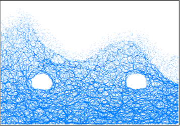

1明月山1号出口段
ZK5-1和ZK5-2决定的截面，主要有粉质黏土、风化千枚状砂岩、一个小破碎带。
(1) 初始模型
图1 初始模型
图2 测量点分布
根据工程地质横断面图在CAD中等比例绘制隧道断面图，根据断面图等比例生成的明月山1号隧道出口段离散元模型如图1所示，地层从上到下主要为粉质黏土、全风化千枚状砂岩、强风化千枚状砂岩、中风化千枚状砂岩。图2给出了相关量测点位置信息，测量点顺序按照顺时针标记，从1~8依次排布。
(2) 力链分布及调整
图3是开挖前力链分布，整体较均匀，在上覆岩层风化程度较高的情况下力链分布呈现出明显差异，风化程度较高的上覆岩层力链值较小。如图4所示，开挖以后隧道周围应力重分布，力链调整过程十分显著。开挖扰动后力链主要在隧道附近进行调整，主要表现为两帮纵向加载，顶板和底板横向加载调整。该两段隧道距离较远，两隧道中间处力链竖向集中不明显。
图3 初始力链

图4 力链调整
(3)开挖过程应力调整及位移场
表1 初始地应力
量测点 | 水平应力/MPa | 垂直应力/MPa |
1 | 1.09 | 0.93 |
2 | 0.85 | 1.0 |
3 | 1.18 | 0.66 |
4 | 1.41 | 1.08 |
5 | 0.52 | 0.80 |
6 | 1.24 | 0.49 |
7 | 1.66 | 0.61 |
8 | 1.65 | 0.98 |
表1 为跟据图2测量点检测得到的初始应力情况，主要为水平应力和垂直应力，结合图5和图6，可以详细的知道开挖以后隧道围岩应力调整过程，主要为隧道两帮围岩在水平方向应力卸载，竖直方向应力加载；隧道顶板围岩在水平方向加载，竖直方向卸载；隧道底板围岩在水平方向加载，竖直方向卸载。
图7给出了先锋顶入口段隧道开挖后位移场的分布，从云图坐标中可以看出，位移基本控制在毫米级的范围，且没有扩展裂纹产生，基本可以认为该段隧道开挖过程稳定，不会发生大变形。

图5 左侧隧道应力调整过程
图6 右侧隧道应力调整过程
图7 位移